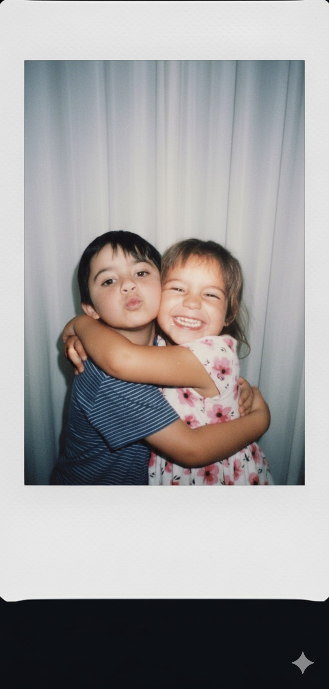
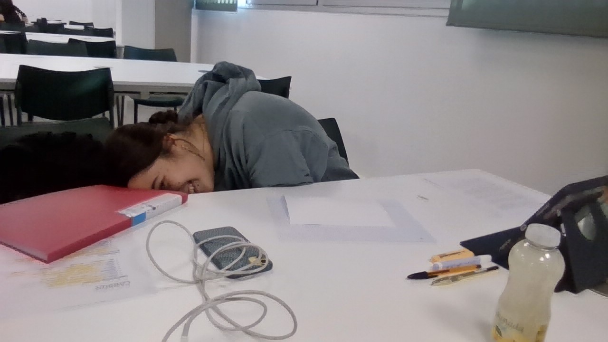

Nuestra historia
📌 Portada
Fliez San Valentín Ali❤️
✨ El día que me llamaste la atención


(Escribe aquí qué pasó ese día. Qué viste en ella, qué pensaste, qué detalle te marcó.)
💬 Cuando empezamos a hablar semanalmente
(Cuenta cómo se volvió “normal” hablar, cómo te sentías esperando sus mensajes, qué os unió.)
❤️ Cuando me di cuenta que sentía por primera vez AMOR
(Aquí va el momento exacto: dónde estabas, qué pensaste, por qué supiste que era amor de verdad.)
📍 La primera vez que quedamos
(Describe la cita: nervios, plan, una frase, una risa, algo que recuerdes perfecto.)
💞 Somos novios
(Cómo fue, cómo lo pedisteis o cómo se dio, qué sentiste, qué cambió a partir de ahí.)
🌙 Nuestra relación
Ali,
No sé muy bien por dónde empezar, sé que hemos estado teniendo unos meses algo raretes y un poco complicados, se nos han mezclado muchas cosas, y no hemos sabido afrontarlo tan bien como podríamos haberlo hecho, pero creo que no pasa nada al fin y al cabo seguimos siendo nuevos en esto de tener un relación, asi que sé que todo va a ir hacia arriba. Igualmente para animar las cosas un poco, quería regalarte algo que no se pueda guardar en una caja, algo que puedas leer cuando quieras recordar lo que somos y lo que elegimos cada día.
Quiero que nunca pienses que nadie te ama, porque no te puedes hacer una idea lo que eres para mi, si lo necesitases me arrancará el corazón y te lo daría. Te amaré el resto de mi vida al máximo, mi objetivo es solo intentar hacerte lo más feliz que pueda. Tu sonrisa es lo más bonito que he visto en mi vida, y no exagero, cuando sonríes tanto que salen tus colmillos, cuando te ries tanto que tu nariz se estrecha un poco, es perfecto. Estar contigo se siente así: como llegar a un lugar donde todo se siente como un juego como una película, no tengo que fingir, solo estoy feliz y disfrutando de todo. Solo me haces sentirme yo de verdad, y eres la única que me hace sentir tan especial, y único.
Me encanta cómo haces que lo normal y aburrido se vuelva interesante y divertido sin darte cuenta. Me gusta cuando estamos en tu casa y de repente te vuelves loca y te pones a cantar, cuando pegas un salto del sofá y te pones a bailar como un pirada. Cuando me metes un chillido, me encanta esa parte de tí más agitada y loca. Al igual que tambien me encanta tu ser mas tranquilo, mas de estar tumbados sin hacer nada, juntos hablando, me gusta cuando te hago sentir sobre estimulada, JAJA sé que a ti en ese momento te dan ganas de matarme, pero ya sabes que como fan y como hater me encanta hacerte picar.
No eres perfecta porque no tengas defectos, lo eres porque eres real y sincera. Porque sientes, porque te esfuerzas, porque dudas, porque quieres bien. Y porque incluso en los momentos difíciles sigues eligiendo quedarte conmigo y seguir construyendo esta relación junto a mi. Eso, Ali, es de las cosas que más admiro y más me gustan de ti, porque sé y entiendo lo que se siente cuando hemos estado en esta racha mala, es por eso que te siento tan fuertemente junto a mi y deseo con todo mi corazón poder seguir disfrutando del resto de mi vida de la mano contigo. Contigo he aprendido que el amor no siempre hace ruido, a veces simplemente calma, acompaña. Y creo que tienes un don con tu calma y forma de escuchar a la gente que hasta a veces me siento mal por no poder ser así como tú.
Gracias por tu paciencia conmigo en serio, por mirarme como si vieras en mí cosas que a veces ni yo veo. Gracias por hacerme querer mejorar no por miedo a pensar que te puedo perder, sino por ganas de estar a tu altura porque aunque no te lo creas, para mí TÚ eres la persona a la que considero mi SÍMBOLO, a qué me refiero con “símbolo”, eres la persona a la que aspiro a ser en la gran mayoría de aspectos de la vida, tu empatía, tu calma, tu forma de afrontar muchos problemas, tu capacidad de entender a la gente a la primera, tu aspecto físico también porque me pareces la persona más atractiva del mundo y la chica con mejor estilo del planeta. Gracias por ser mi novia, mi mejor amiga y esa persona a la que siempre quiero contarle todo primero.
No sé cómo será nuestro futuro, pero sí sé algo con absoluta certeza y claridad: quiero vivirlo contigo TODO. Aprender a quererte mejor, entenderte mejor, aprender que te gusta, aprender qué necesitas en cada momento, poder leerte como a un libro, crecer a tu lado, reírnos de nuestras tonterías y apoyarnos cuando la vida apriete y sea más difícil. Si algún día dudas, quiero que recuerdes esto: yo te elegí cuando me fijé en tí por primera vez, cuando me enamoré de ti y todos los días de mi vida, y te seguiré eligiendo el resto de mi vida, porque no existe nada o nadie que sea un 0,00000001 * 10^ a un googleplex que se te acerque a ti. Te elegiré hoy, mañana y todas las veces que haga falta.
Este San Valentín no quiero prometer cosas imposibles, solo algo muy sencillo e importante para mi: cuidarte, escucharte, hacerte sentir cómoda y quererte de la mejor forma que sé. Porque para mi amarte no es algo complicado, al contrario, es lo más natural y fácil que hago, porque eres la mejor chica de mi MUNDO.
Gracias por existir.
Gracias por ser mi lugar seguro.
Gracias por ser tal y como eres.
Te quiero, Ali.
Y me siento inmensamente afortunado de que seas tú, de verdad que no sabes cuan afortunado me siento teniendote a ti a mi lado.
Eres más de lo que podría pedir y eres más de lo que esperaba alguna vez encontrar.
Te amo Alicia 💙